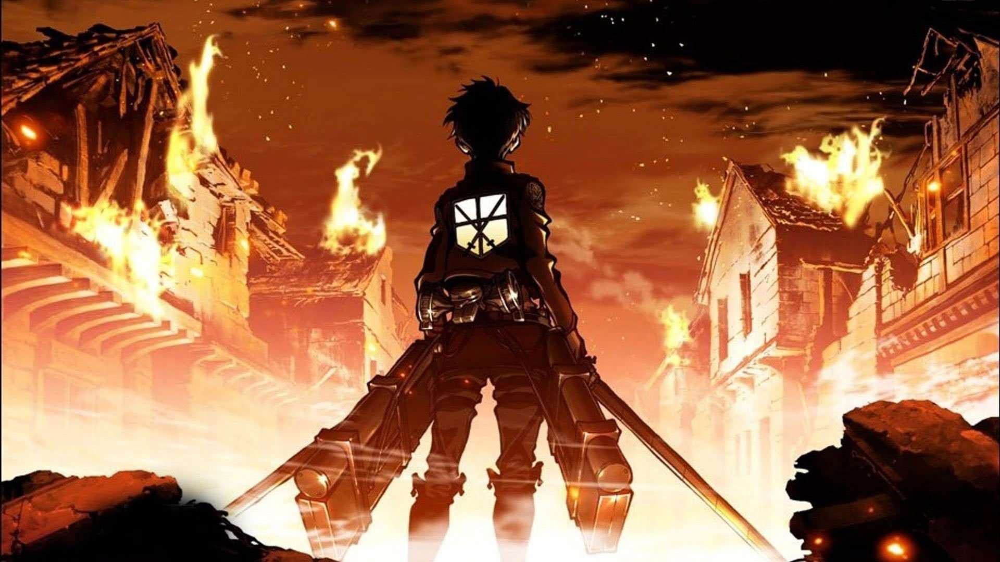

Shingeki no Kiojin

La historia se desarrolla en un mundo ficticio en el que la humanidad está al borde de la extinción a
causa de unas criaturas humanoides llamadas «titanes», lo que obliga a los sobrevivientes a refugiarse en tres enormes murallas que impiden el acceso a dichos monstruos

si quieres saber mas sobre este animo dirigete a la pagina
https://shingeki-no-kyojin.fandom.com/es/wiki/Shingeki_no_Kyojin_Wiki